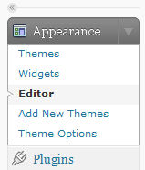
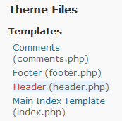

Note that there is a WordPress plugin for MathJax, so that may be a better choice than editing the theme directly.
Open the WordPress admin interface.
In the administration menu on the left, open up the Appearance menu and click on the Editor submenu option.

When you click on the editor option, WordPress should open up the first stylesheet in the current theme.
In the template list on the right side of the page, click on the header file (it should be header.php).

This part depends slightly on how your current theme is written. In the header.php file, look for the end-of-head tag, </head>. If you find it, insert
<script type="text/javascript"
src="http://cdn.mathjax.org/mathjax/latest/MathJax.js?config=TeX-AMS-MML_HTMLorMML">
</script>
just before that. Otherwise, insert the same code at the very bottom of the file.
Save the file. This will enable MathJax with both TeX and MathML input, so you should be able to start adding mathematical content to your pages. If you need to adjust the configuration, see Configuring MathJax for more details.